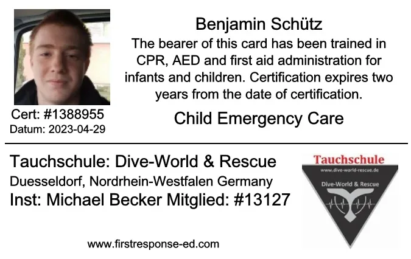
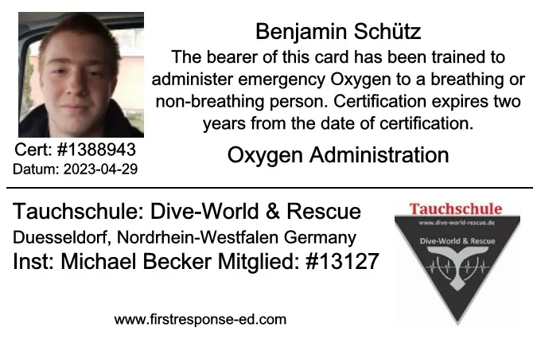
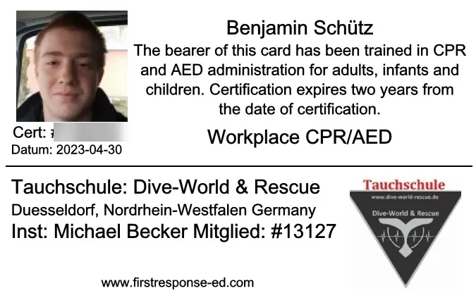
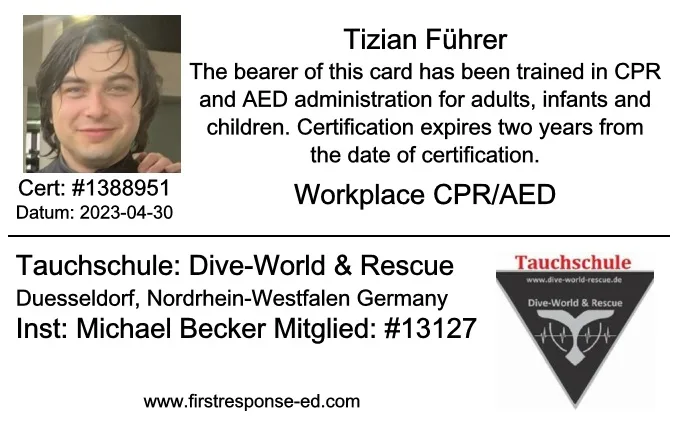
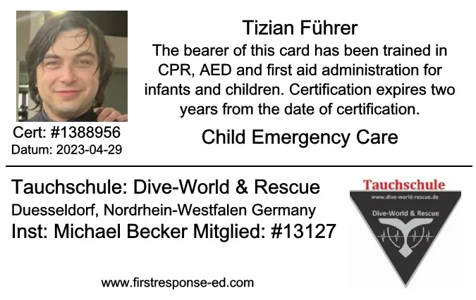
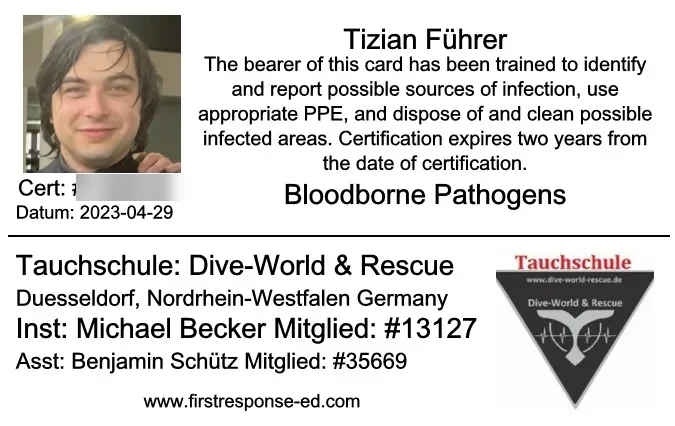
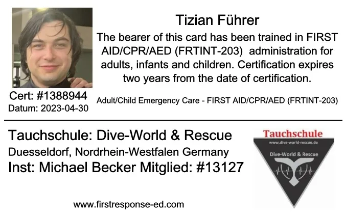
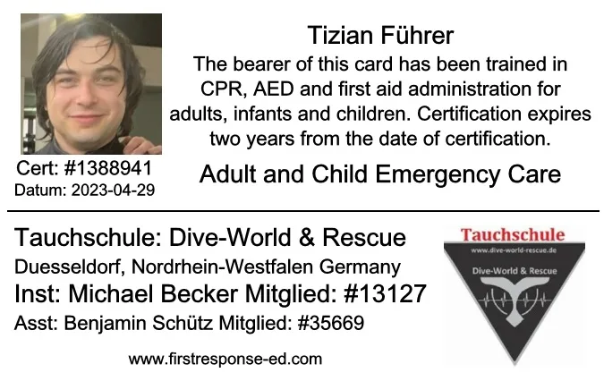

FRTI-Abschlüsse
Einblicke in die abgeschlossenen Ausbildungen bei First Response Training International.
April 2023

















Einblicke in die abgeschlossenen Ausbildungen bei First Response Training International.







